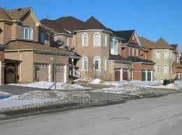

Richmond Hill,Ontario
About
Richmond Hill, Ontario is a town located in southern area of York Region. It is part of The Greater Toronto Area. Richmond Hill is known to be Canada's fastest growing community since the 1990s. Many suburban style residential areas,plazas and malls have been erected. R. Hill is also home to a very active booming district around Highway 7 & East Beaver Creek. It is home to the David Dunlap Observatory Telescope, once the second largest telescope in the world.
Statistics
- Population is 185,541 as of 2011, with a population greater than 200,000 as of now.
- The town extends 14 km (9 miles) north-south and 7 km (3.5 miles) east-west.
- The town operates approximately 30 elementary schools and 5 secondary schools.
- For more information on statistics, history, recreation and general inquiries visit the official Richmond Hill Website.
- 

- The suburban housing style.
- Richmond Hill's official logo.
- Richmond Hill office at Highway 7 & East Beaver Creek
Richmond Hill, Ontario is the town I settled into and grew up in after I first arrived in Canada at the age of 12. I attended Baythorn Public School from grade 6 - 8 and
graduated on to attend Thornhill Secondary School as my secondary school. My best friends now are people I met in elementary school. Although Richmond Hill isn't too lively,
we spend our times visiting the local Cineplex to catch the latest movies and eating at the many restaurants located in the town. Like many places in Canada, the racial demographic
is very diverse and it's nice to be part of such a community.Richmond Hill is the place my family and I have reached many milestones while in Canada and is the place I have created
some of my fondest memories, this is where I would call my home.